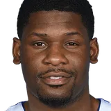

Played 1 season for 2 teams; his teams went 2–4 in his games.
Jump to: Record by opponent · Season by season · Teammate help
Compare Adonis Thomas with…
Final NBA finish, season by season
Title Finals Other playoffs Missed playoffs. #1 = champion; the dashed line is last place that season. Each point opens that season's final standings.
All 30 teams ranked in 2013-14, his best finish (#28)Teammate help
 Victor Oladipo0.21 season
Victor Oladipo0.21 season
Career
Career records (W–L, W − L, with and without) include 2026-27 games through Nov. 17, 2026; season counts and finishes are through 2025-26. Each card opens its board in the same scope. How we count.

Latest completed seasons
Season by season
Newest first; every header sorts. Final NBA finish is the team's rank among all teams that season (#1 = champion) and opens that season's standings. "Without him" uses the team-season window; the span line counts only the games between his first and last game for the team.
| 2013-14 | #28 of 30 | 23–59 28.0% | Missed playoffs | 4 of 82 | 1–3 25.0% | 22–52 29.7%span: N/A, gap N/A | −4.7 | |
| 2013-14 | #29 of 30 | 19–63 23.2% | Missed playoffs | 2 of 82 | 1–1 50.0% | 3–15 16.7%span: 1–1, gap 0.0 | +33.3 |
On/off, starts and close games
From the lineup data, 1996-97 on. On/off is net points per 100 possessions with him on the floor minus off, a different unit from the win-rate gaps. Started and off the bench are team records in those games; close games are those within 5 points in the last 5 minutes with him on the floor.
| 2013-14 | +30.8 | N/A | 1–3 25.0% | |
| 2013-14 | +16.2 | 1–0 100.0% | 0–1 0.0% |
Teammate help by season
Two separate numbers per season, each with every teammate that adds to it. Help this season = Teammates Score points for honors won that season by teammates who shared a game with him. Help coming in = the same teammates' honors from the season before. How help works.
- 2013-14
 Orlando
Orlando
Help this season: 0.25 = 0.25 Victor Oladipo
Victor Oladipo All-Rookie 1st0.252 g
More: help coming in and other teammates
Help coming in (teammates' honors the season before): 0
Other teammates (no honors that season): Kyle O'Quinn 4 g, Andrew Nicholson 4 g, Moe Harkless 4 g, E'Twaun Moore 4 g, Tobias Harris 4 g, Nikola Vucevic 4 g, Dewayne Dedmon 3 g, Doron Lamb 3 g, Ronnie Price 3 g, Jameer Nelson 2 g, Arron Afflalo 2 g
- 2013-14
 Philadelphia
Philadelphia
Help this season: 0.75 = 0.75 Michael Carter-Williams
 Michael Carter-Williams ROYAll-Rookie 1st0.752 g
Michael Carter-Williams ROYAll-Rookie 1st0.752 g
More: help coming in and other teammates
Help coming in (teammates' honors the season before): 0
Other teammates (no honors that season): Casper Ware 2 g, Brandon Davies 2 g, Henry Sims 2 g, Hollis Thompson 2 g, Tony Wroten 2 g, Jarvis Varnado 2 g, Elliot Williams 2 g, James Anderson 2 g, Thaddeus Young 2 g, BJ Mullens 1 g
Record against each opponent
Regular season, through 2025-26 (2026-27 games not included): 6 games, 2–4, against 5 franchises.
Grouped by franchise (named as today); game lists keep each team's name that season. Filters and the tab are kept in the URL, so a filtered view can be shared.
| Games list | |||||||
|---|---|---|---|---|---|---|---|
| 2 | 1–1 | 50.0% | 0 | N/A | 2013-14 | ||
| 1 | 0–1 | 0.0% | −1 | N/A | 2013-14 | ||
| 1 | 0–1 | 0.0% | −1 | N/A | 2013-14 | ||
| 1 | 1–0 | 100.0% | +1 | N/A | 2013-14 | ||
| 1 | 0–1 | 0.0% | −1 | N/A | 2013-14 |
Rows add up to his career record in his games. A playoff series counts when he played in it; early round-robin games show as games only. How we count.
Arrival and departure
Team wins per 82 games the season before he arrived vs his first season there, and his last season vs the season after he left. Per 82 so short seasons compare fairly. These are team records, not a measure of what he did.
| Left | 2014-15 | 2013-14: 23–59 23.0 per 82 | 2014-15: 25–57 25.0 per 82 | +2.0 wins | |
| Left | 2014-15 | 2013-14: 19–63 19.0 per 82 | 2014-15: 18–64 18.0 per 82 | −1.0 wins | |
| Arrived | 2013-14 | 2012-13: 20–62 20.0 per 82 | 2013-14: 23–59 23.0 per 82 | +3.0 wins | |
| Arrived | 2013-14 | 2012-13: 34–48 34.0 per 82 | 2013-14: 19–63 19.0 per 82 | −15.0 wins |
Seasons split between teams
Each team's record before his first game for it, inside his window (games with and without him) and after his last game, in the seasons he played for two or more teams.
| 2013-14 | March 1, 2014 to March 8, 2014 | N/A | 23–55 29.5% | 0–4 0.0% | 4 | |
| 2013-14 | April 11, 2014 to April 16, 2014 | 15–47 24.2% | 4–16 20.0% | N/A | 2 |